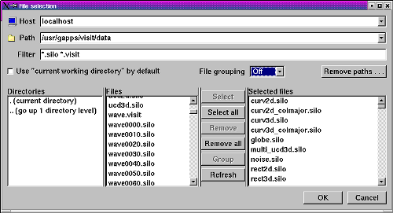
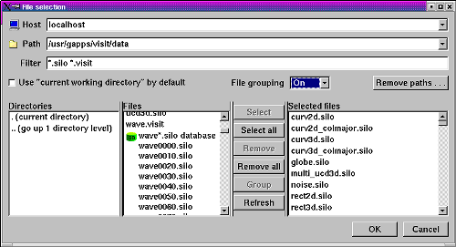

A virtual database is a time-varying database that VisIt artificially creates out of smaller, single time step databases that have related filenames. Virtual databases allow you to access time-varying data without having to first create a ".visit" file. The files that are grouped into a virtual database are determined by the file filter. That is, only files that match the file filter are considered for grouping into virtual databases. You can change the definition of a virtual database by changing the file filter before you add the virtual database into your selected files list. A virtual database appears in the file list and the selected files list as a set of filenames that are grouped under a single filename that contains the "*" wildcard character. When you click on any of the filenames in the virtual database, the entire database is selected.
You can tell VisIt to not automatically create virtual databases by selecting the Off option in the File grouping menu in the File Selection Window. When automatic file grouping is turned off, no files are grouped into virtual databases and groups of files that make up a time-varying database will not be recognized as such without a ".visit" file. See figure for the effects of automatic file grouping on files in the File Selection Window.
VisIt has two levels of automatic file grouping. The default level is Smart file grouping, which enables automatic file grouping but has extra rules that prevent certain groups of files from being grouped into virtual databases. If you find that Smart file grouping does not provide the virtual databases that you expect, you can back the file grouping mode down to On or turn it off entirely.
|  |
| Figure 2 |
|  |
| Figure 3 |